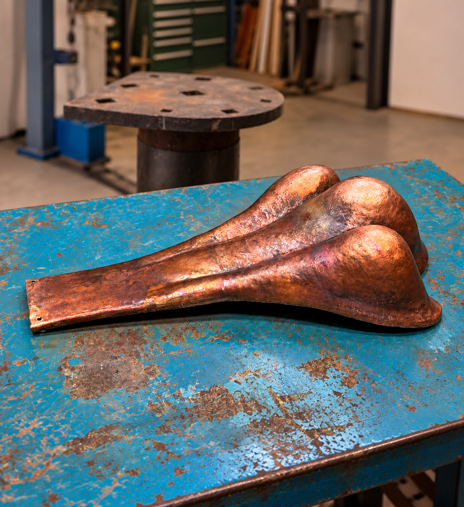

Anders Nilsson
Ett mycket noggrant arbete med stor känsla för detaljer och det traditionella hantverket.
När du anlitar J. Norberg Plåtslageri AB har du direkt kontakt med den som utför arbetet – från offert till faktura. Det innebär att kunskap, erfarenhet och känsla för hantverket följer med genom hela projektet, utan onödiga mellanhänder eller informationsvägar där missförstånd kan uppstå.
Varje projekt genomförs med resultatet som högsta prioritet. Genom stor noggrannhet, känsla för de små detaljerna och respekt för det traditionella hantverket utför jag varje arbete med yrkesstolthet och höga krav på kvalitet.

Ett mycket noggrant arbete med stor känsla för detaljer och det traditionella hantverket.
John har en fin förståelse för äldre byggnader och hur detaljer ska bevaras.
Professionellt utfört från början till slut, med stort fokus på kvalitet.
Ett hantverk med både precision och förståelse för helheten i projektet.
Omsorgsfullt arbete där material, proportioner och detaljer samspelar.
Ett väl genomfört projekt där kvalitet och detaljer stod i centrum.
Stor yrkesskicklighet och ett resultat som håller hög nivå genom hela arbetet.
Noggrant, professionellt och med stor respekt för byggnadens karaktär.
Ett gediget hantverk med mycket fin känsla för både material och utförande.
Mycket fint utfört arbete med stor noggrannhet och känsla för detaljer.
Traditionellt byggnadsplåtslageri med fokus på noggrant utförande, hållbarhet och detaljer som håller över tid.

Tillverkning och bearbetning av koppar för tak, fasader och arkitektoniska detaljer.

Restaurering av äldre och kulturhistoriska byggnader med respekt för originalutförande, material och hantverk.
Specialanpassade arbeten där traditionellt hantverk möter unika idéer, former och material.

Just nu pågår restaurering av koppar detaljer på Villa Bergabo på Södra Djurgården. Arbetet omfattar varsam restaurering och nytillverkning med fokus på att bevara byggnadens ursprungliga uttryck och hantverksmässiga detaljer.
Läs mer om Villa Bergabo →
Här kommer information om J. Norbergs gesällbrev, utbildning, yrkeserfarenhet, deltagande i SM och andra meriter inom plåtslageriet.
Läs mer om J. Norberg →
Har du ett projekt inom plåt, koppar eller restaurering? Kontakta mig gärna för att diskutera arbetet.